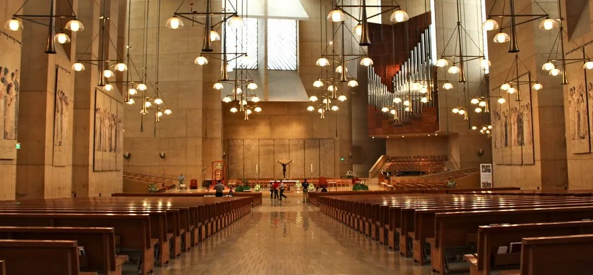
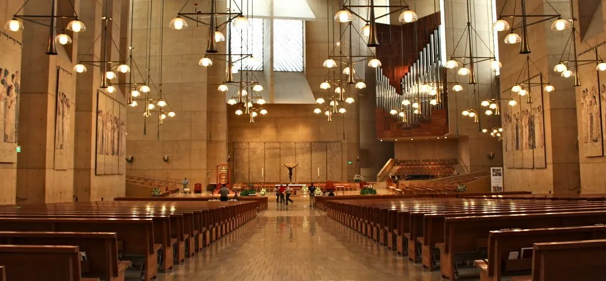

Symbole d'Architecture Sacrée et Spirituelle
 

Un Symbole Sacré

La cathédrale Notre-Dame-des-Anges, située à Los Angeles, est une œuvre architecturale emblématique qui incarne la beauté de la foi et de l'art. Consacrée en 2002, cette cathédrale majestueuse est un symbole spirituel et culturel important dans la métropole californienne.
Une Beauté Spirituelle
La cathédrale Notre-Dame-des-Anges, située à Los Angeles, est une œuvre architecturale emblématique qui incarne la beauté de la foi et de l'art. Consacrée en 2002, cette cathédrale majestueuse est un symbole spirituel et culturel important dans la métropole californienne. Avec ses lignes contemporaines et son design saisissant, la cathédrale Notre-Dame-des-Anges se distingue par son architecture audacieuse. Ses hauts murs de pierre, ses voûtes élégantes et ses vitraux colorés captivent les visiteurs, créant une atmosphère de recueillement et d'inspiration. À l'intérieur, la grandeur de l'espace laisse une impression durable. La lumière du soleil filtrant à travers les vitraux enveloppe l'édifice d'une aura céleste, tandis que les éléments artistiques et liturgiques, soigneusement conçus, captivent l'attention.
Refuge Spirituel
Au cœur de la ville animée de Los Angeles, la cathédrale Notre-Dame-des-Anges est un sanctuaire de paix et de sérénité, offrant aux fidèles et aux visiteurs un refuge pour la contemplation et la prière. Elle demeure un joyau architectural qui transcende les frontières religieuses, accueillant tous ceux qui cherchent la beauté, la spiritualité et la communion.